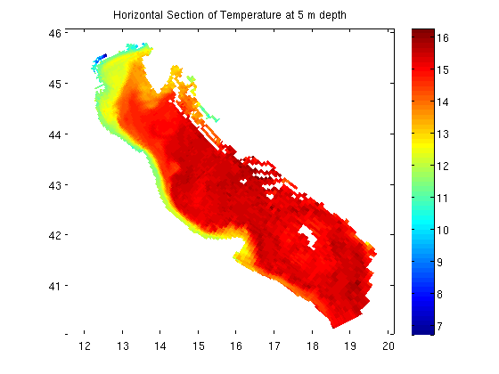

Contents
GEODEMO_3
Using ZSLICEG to create a horizontal section from a 3D field
% OpenDAP dataset: uri = 'http://geoport.whoi.edu/thredds/dodsC/examples/bora_feb.nc'
uri = http://geoport.whoi.edu/thredds/dodsC/examples/bora_feb.nc
Use nj_tbx legacy functions in NCTOOLBOX
Get the 3d field at the first time step and intepolate the horizontal field to the constant 5m depth
[t,g]=nj_tslice(uri,'temp',1);% grab 3d field of 'temp' at time step 1 tz = zsliceg(t,g.z,-5); % return temperature slice at 5 m depth
Plot the interpolated horizontal field
Plot the interpolated field with its coordinate axes, add a plot title and colorbar
figure pcolorjw(g.lon,g.lat,double(tz)); % plot temp at 5 m depth title('Horizontal Section of Temperature at 5 m depth'); colorbar